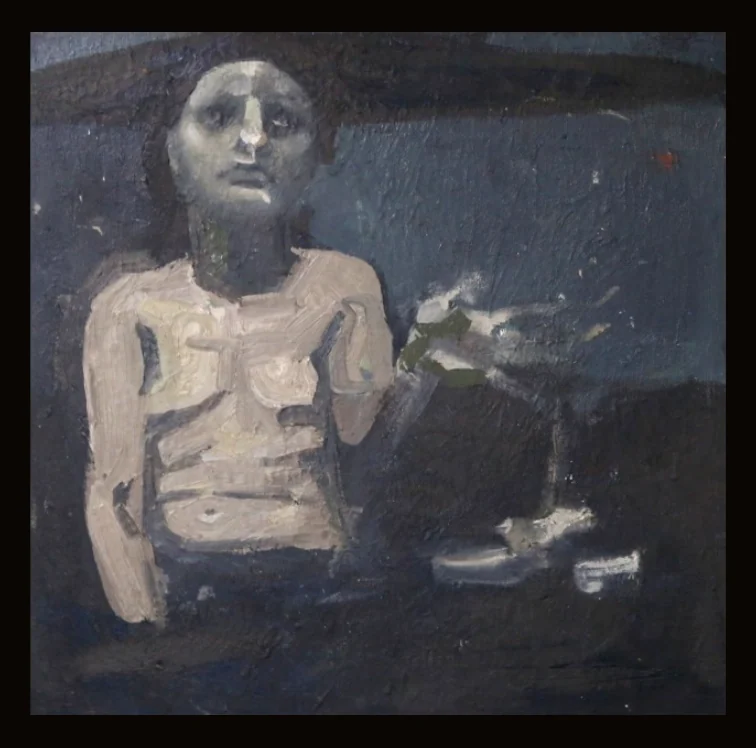

Malerei — Öl
Warten
2026 · Öl auf Leinwand · 29 × 29 cm
Eine ruhige Porträtstudie in gedeckten Tönen, die Hand im stillen Gestus erhoben.
Anfrage senden Veronika Horytska
Veronika Horytska

2026 · Öl auf Leinwand · 29 × 29 cm
Eine ruhige Porträtstudie in gedeckten Tönen, die Hand im stillen Gestus erhoben.
Anfrage senden